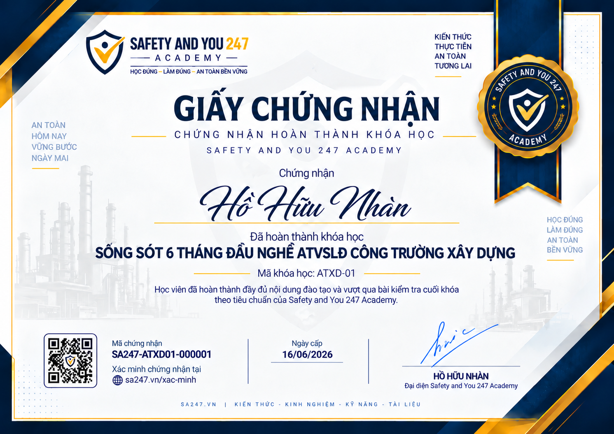

01
Nắm luật chơi và dựng hệ thống
Tổng quan rủi ro công trường, pháp luật cho nhân viên quản lý an toàn, kế hoạch tổng hợp và hồ sơ pháp lý.
M01 → M03SA247 E-LEARNING ATXD-01
Công trường ồn, nhiều nhà thầu, rủi ro đổi mỗi tuần. Bạn mới vào nghề và sợ “làm sai một phát là sự cố”. ATXD-01 đưa bạn bản đồ sống sót.
Nỗi đau trên công trường
ATVSLĐ xây dựng khó hơn nhiều vì hiện trường thay đổi liên tục. Thiếu thứ tự, bạn sẽ chỉ chạy theo tiếng hét của giám sát.
Cheo leo, hố đào, điện, cần cẩu, giao thông nội bộ… tất cả đều gấp. Bạn cần thứ tự kiểm soát.
Mỗi đội một thói quen. Bạn nhắc mãi vẫn tái diễn vì thiếu quy tắc vào cổng và giám sát theo tiêu chí.
Có phương án nhưng thi công khác. Bạn không biết khi nào dừng việc, khi nào chỉ ghi nhận.
Nói an toàn bị xem là “cản việc”. Bạn cần cách làm việc có bằng chứng, không chỉ hô khẩu hiệu.
Giải pháp
Bạn học đúng thứ tự để không bị cuốn vào mọi việc cùng lúc.
Tổng quan rủi ro công trường, pháp luật cho nhân viên quản lý an toàn, kế hoạch tổng hợp và hồ sơ pháp lý.
M01 → M03Nhận diện mối nguy đặc thù, hệ thống giấy phép làm việc (PTW) và họp an toàn đầu ca (TBM).
M04 → M06Bụi–ồn–nước thải–chất thải, kho vật liệu nguy hiểm, quan sát STOP và báo cáo cho chỉ huy trưởng.
M07 → M09Sau khóa học
Bạn có cách làm việc trên công trường mà không bị “nuốt” bởi tiến độ và tiếng ồn thông tin.
Đối tượng học
Công trường khác nhà máy. Đừng mang thói quen nhà máy sang mà không chỉnh khung.
Nội dung
Học theo thứ tự: mỗi mô-đun mở đầu bằng video giới thiệu, sau đó là các bài học video.
ATXD01-M01-B00 Giới thiệu mô-đun M01 · Tổng quan về ATVSLĐ trong xây dựngMở đầu mô-đun M01 · Tổng quan về ATVSLĐ trong xây dựng: mục tiêu và cấu trúc 4 bài.
• Đặc thù rủi ro của công trường và bốn nhóm tai nạn gây tử vong hàng đầu
• Các chủ thể của dự án xây dựng và phân định trách nhiệm ATVSLĐ
• Khung pháp luật xây dựng và kế hoạch tổng hợp về an toàn lao động của dự án
• Rủi ro theo giai đoạn thi công và kế hoạch 30-60-90 ngày của nhân viên an toàn mới
ATXD01-M01-B01 Đặc thù rủi ro của công trường và bốn nhóm tai nạn gây tử vong hàng đầu Xem trướcBài 1 · Tổng quan về ATVSLĐ trong xây dựng.
• Công trường khác nhà máy ở những điểm nào
• Bốn nhóm tai nạn gây tử vong hàng đầu trong xây dựng
• Tai nạn công trường sinh ra ở giao diện, không sinh ra ở giữa công việc
• Đọc số liệu tai nạn của ngành và của dự án cho đúng
ATXD01-M01-B02 Các chủ thể của dự án xây dựng và phân định trách nhiệm ATVSLĐ Xem trướcBài 2 · Tổng quan về ATVSLĐ trong xây dựng.
• Ai có mặt trên một công trường và họ đến đây để làm gì
• Trách nhiệm ATVSLĐ theo pháp luật xây dựng và pháp luật lao động
• Giao diện tổng thầu và nhà thầu phụ, nơi trách nhiệm hay bị đá qua đá lại
• Bản đồ các bên liên quan của nhân viên an toàn mới
ATXD01-M01-B03 Khung pháp luật xây dựng và kế hoạch tổng hợp về an toàn lao động của dự ánBài 3 · Tổng quan về ATVSLĐ trong xây dựng.
• Bản đồ văn bản áp dụng cho công trường xây dựng
• QCVN 18:2021/BXD và cách dùng nó hằng ngày
• Kế hoạch tổng hợp về an toàn lao động của dự án
• Bộ hồ sơ pháp lý tối thiểu phải có tại công trường
ATXD01-M01-B04 Rủi ro theo giai đoạn thi công và kế hoạch 30-60-90 ngày của nhân viên an toàn mới Xem trướcBài 4 · Tổng quan về ATVSLĐ trong xây dựng.
• Sáu giai đoạn thi công và rủi ro trội của từng giai đoạn
• Kỳ vọng thực tế đối với nhân viên an toàn công trường
• Kế hoạch 30-60-90 ngày trên công trường
• Những sai lầm điển hình của sáu tháng đầu và cách tránh
ATXD01-M02-B00 Giới thiệu mô-đun M02 · Pháp luật đại cương cho nhân viên quản lý an toànMở đầu mô-đun M02 · Pháp luật đại cương cho nhân viên quản lý an toàn: mục tiêu và cấu trúc 4 bài.
• Nghĩa vụ pháp lý của nhà thầu thi công xây dựng và cách lập danh mục tuân thủ
• Huấn luyện ATVSLĐ và kiểm soát nhân sự trong điều kiện lao động thời vụ luân chuyển cao
• Kiểm định thiết bị thi công và chế độ với người bị tai nạn lao động, bệnh nghề nghiệp
• Trách nhiệm liên đới, tiếp đoàn thanh tra và quản lý rủi ro bị xử phạt
ATXD01-M02-B01 Nghĩa vụ pháp lý của nhà thầu thi công xây dựng và cách lập danh mục tuân thủBài 1 · Pháp luật đại cương cho nhân viên quản lý an toàn.
• Nghĩa vụ của nhà thầu thi công xây dựng nhìn từ góc độ người phải thực hiện
• Vì sao nghĩa vụ trên công trường khó thực hiện hơn trong nhà máy
• Chuyển văn bản thành danh mục nghĩa vụ pháp lý của dự án
• Kỹ năng tra cứu và kiểm tra hiệu lực văn bản
ATXD01-M02-B02 Huấn luyện ATVSLĐ và kiểm soát nhân sự trong điều kiện lao động thời vụ luân chuyển caoBài 2 · Pháp luật đại cương cho nhân viên quản lý an toàn.
• Sáu nhóm huấn luyện và cách áp vào thực tế công trường
• Huấn luyện định hướng công trường, phần mà quy định không nêu tên nhưng bắt buộc phải có
• Quy trình cấp thẻ ra vào, công cụ pháp lý mạnh nhất của người làm an toàn
• Lao động thời vụ, lao động thuê lại và những khoảng trống pháp lý hay gặp
ATXD01-M02-B03 Kiểm định thiết bị thi công và chế độ với người bị tai nạn lao động, bệnh nghề nghiệpBài 3 · Pháp luật đại cương cho nhân viên quản lý an toàn.
• Thiết bị thi công nào phải kiểm định và kiểm định vào lúc nào
• Kiểm tra hồ sơ thiết bị trước khi cho vận hành
• Trình tự xử lý khi xảy ra tai nạn lao động trên công trường
• Chế độ với người bị tai nạn lao động và bệnh nghề nghiệp
ATXD01-M02-B04 Trách nhiệm liên đới, tiếp đoàn thanh tra và quản lý rủi ro bị xử phạt Xem trướcBài 4 · Pháp luật đại cương cho nhân viên quản lý an toàn.
• Trách nhiệm liên đới giữa tổng thầu và nhà thầu phụ
• Sắp xếp hồ sơ để xuất trình khi thanh tra
• Tiếp đoàn thanh tra, kiểm tra và cách ứng xử
• Nhóm vi phạm có rủi ro xử phạt cao nhất và cách tự đánh giá
ATXD01-M03-B00 Giới thiệu mô-đun M03 · Xây dựng hệ thống quản lý an toàn đáp ứng yêu cầu pháp luậtMở đầu mô-đun M03 · Xây dựng hệ thống quản lý an toàn đáp ứng yêu cầu pháp luật: mục tiêu và cấu trúc 4 bài.
• Kế hoạch tổng hợp ATVSLĐ theo Nghị định 06/2021/NĐ-CP
• Nội quy và quyết định phân công an toàn
• Sổ huấn luyện nhóm 3 và nhật ký an toàn
• Ma trận CĐT–TVC–NTP và workshop hồ sơ pháp lý
ATXD01-M03-B01 Kế hoạch tổng hợp ATVSLĐ theo Nghị định 06/2021/NĐ-CPBài 1 · Xây dựng hệ thống quản lý an toàn đáp ứng yêu cầu pháp luật.
• Vai trò KH tổng hợp và mục lục bắt buộc
• Phê duyệt phiên bản
• Quản lý NTP trong KH
• Liên kết biện pháp thi công
ATXD01-M03-B02 Nội quy và quyết định phân công an toànBài 2 · Xây dựng hệ thống quản lý an toàn đáp ứng yêu cầu pháp luật.
• Nội quy và bằng chứng thông báo
• Quyết định phân công
• Mạng lưới ATVSV
• Công bố phân công
ATXD01-M03-B03 Sổ huấn luyện nhóm 3 và nhật ký an toànBài 3 · Xây dựng hệ thống quản lý an toàn đáp ứng yêu cầu pháp luật.
• Sổ huấn luyện nhóm 3
• Thẻ an toàn và tái HL
• Nhật ký an toàn
• Đối chiếu ba nguồn
ATXD01-M03-B04 Ma trận CĐT–TVC–NTP và workshop hồ sơ pháp lýBài 4 · Xây dựng hệ thống quản lý an toàn đáp ứng yêu cầu pháp luật.
• Trách nhiệm CĐT và TVC
• Trách nhiệm NTC và NTP
• Ma trận RACI
• Workshop rà soát hồ sơ
ATXD01-M04-B00 Giới thiệu mô-đun M04 · Nhận diện các mối nguy đặc thù trong xây dựngMở đầu mô-đun M04 · Nhận diện các mối nguy đặc thù trong xây dựng: mục tiêu và cấu trúc 4 bài.
• Sáu nhóm mối nguy tử vong và cơ chế phát sinh
• Checklist mối nguy theo giai đoạn thi công
• Morning walkthrough và kiểm tra buổi sáng
• Workshop phân tích mối nguy dự án giả định
ATXD01-M04-B01 Sáu nhóm mối nguy tử vong và cơ chế phát sinhBài 1 · Nhận diện các mối nguy đặc thù trong xây dựng.
• Ngã cao và điện giật
• Sập hố và vật rơi
• Máy thi công
• Không gian hạn chế
ATXD01-M04-B02 Checklist mối nguy theo giai đoạn thi côngBài 2 · Nhận diện các mối nguy đặc thù trong xây dựng.
• Checklist giai đoạn móng
• Checklist giai đoạn thân
• Checklist hoàn thiện
• Tổng hợp 3 giai đoạn
ATXD01-M04-B03 Morning walkthrough và kiểm tra buổi sángBài 3 · Nhận diện các mối nguy đặc thù trong xây dựng.
• Chuẩn bị walkthrough
• 25 mục checklist
• 3 mối nguy ưu tiên
• Biên bản và ảnh GPS
ATXD01-M04-B04 Workshop phân tích mối nguy dự án giả địnhBài 4 · Nhận diện các mối nguy đặc thù trong xây dựng.
• JSA/PHA hạng mục
• Ma trận rủi ro
• Liên kết PTW
• Kế hoạch kiểm soát
ATXD01-M05-B00 Giới thiệu mô-đun M05 · Hệ thống quản lý công việc nguy hiểm (PTW)Mở đầu mô-đun M05 · Hệ thống quản lý công việc nguy hiểm (PTW): mục tiêu và cấu trúc 4 bài.
• Hệ thống PTW và bảy bước cấp phép
• PTW hot work, height và confined space
• PTW electrical, excavation và crane
• Gas test, suspend/cancel và đa nhà thầu
ATXD01-M05-B01 Hệ thống PTW và bảy bước cấp phépBài 1 · Hệ thống quản lý công việc nguy hiểm (PTW).
• Khái niệm PTW
• 7 bước chuẩn
• Người cấp phép
• Quầy PTW tập trung
ATXD01-M05-B02 PTW hot work, height và confined spaceBài 2 · Hệ thống quản lý công việc nguy hiểm (PTW).
• Hot work và LEL
• Height PTW
• Confined space
• Gas test 4 khí
ATXD01-M05-B03 PTW electrical, excavation và craneBài 3 · Hệ thống quản lý công việc nguy hiểm (PTW).
• Electrical LOTO
• Excavation vách
• Crane PTW
• Bản vẽ nâng hạ
ATXD01-M05-B04 Gas test, suspend/cancel và đa nhà thầuBài 4 · Hệ thống quản lý công việc nguy hiểm (PTW).
• Thời hạn hiệu lực
• Suspend vs cancel
• Overlap NTP
• Audit PTW tuần
ATXD01-M06-B00 Giới thiệu mô-đun M06 · Kỹ năng tổ chức họp an toàn TBMMở đầu mô-đun M06 · Kỹ năng tổ chức họp an toàn TBM: mục tiêu và cấu trúc 4 bài.
• Cấu trúc TBM 10-15 phút: 1+1+1
• Chuẩn bị và trình bày TBM hiệu quả
• Sổ nhật ký TBM và bằng chứng tuân thủ
• Xử lý lao động mất tập trung và đánh giá TBM
ATXD01-M06-B01 Cấu trúc TBM 10-15 phút: 1+1+1Bài 1 · Kỹ năng tổ chức họp an toàn TBM.
• 1 mối nguy
• 1 biện pháp
• 1 câu hỏi
ATXD01-M06-B02 Chuẩn bị và trình bày TBM hiệu quảBài 2 · Kỹ năng tổ chức họp an toàn TBM.
• Chuẩn bị script
• Không đọc nội quy
• Demo PPE
• Ngôn ngữ công trường
ATXD01-M06-B03 Sổ nhật ký TBM và bằng chứng tuân thủBài 3 · Kỹ năng tổ chức họp an toàn TBM.
• Sổ TBM ký tên
• Số người tham dự
• Ghi mối nguy/BP
• Liên kết nhật ký AT
ATXD01-M06-B04 Xử lý lao động mất tập trung và đánh giá TBMBài 4 · Kỹ năng tổ chức họp an toàn TBM.
• LD muộn/ngủ
• Xử lý sau TBM
• Đánh giá 70%
• Rotate chủ đề 2 tuần
ATXD01-M07-B00 Giới thiệu mô-đun M07 · Quản lý môi trường và rác thảiMở đầu mô-đun M07 · Quản lý môi trường và rác thải: mục tiêu và cấu trúc 4 bài.
• Khung pháp lý BVMT và trách nhiệm các chủ thể trên công trường
• Kiểm soát bụi: cắt thép, khoan, phun vữa và hàng rào chống bụi
• Kiểm soát tiếng ồn, nước thải thi công và khu rửa xe bánh
• Phân loại chất thải rắn, CTNH và đối soát hợp đồng xử lý
ATXD01-M07-B01 Khung pháp lý BVMT và trách nhiệm các chủ thể trên công trườngBài 1 · Quản lý môi trường và rác thải.
• Luật Bảo vệ môi trường 72/2020 trên công trường xây dựng
• Kế hoạch quản lý chất thải và biện pháp thi công
• Hợp đồng xử lý và giấy xác nhận tiếp nhận
• Phối hợp ATVSLĐ và môi trường khi đi hiện trường
ATXD01-M07-B02 Kiểm soát bụi: cắt thép, khoan, phun vữa và hàng rào chống bụi Xem trướcBài 2 · Quản lý môi trường và rác thải.
• Nguồn phát sinh bụi trên công trường theo giai đoạn
• Biện pháp kỹ thuật: phun ẩm, che lưới, thu gom bùi
• Hàng rào chống bụi: tiêu chuẩn kiểm tra thực địa
• Quan trắc bụi và xử lý vượt ngưỡng
ATXD01-M07-B03 Kiểm soát tiếng ồn, nước thải thi công và khu rửa xe bánhBài 3 · Quản lý môi trường và rác thải.
• Tiếng ồn thi công gần khu dân cư
• Nước thải từ rửa thiết bị và bê tông
• Khu rửa xe bánh và xe thi công
• Xử lý sự cố nước thải tràn
ATXD01-M07-B04 Phân loại chất thải rắn, CTNH và đối soát hợp đồng xử lýBài 4 · Quản lý môi trường và rác thải.
• Chất thải rắn thường trên công trường
• Chất thải nguy hại: dầu, giẻ sơn, bóng đèn
• Workshop phân loại và ghi sổ
• Bảng đối soát hợp đồng xử lý
ATXD01-M08-B00 Giới thiệu mô-đun M08 · Quản lý kho vật liệu nguy hiểmMở đầu mô-đun M08 · Quản lý kho vật liệu nguy hiểm: mục tiêu và cấu trúc 4 bài.
• Yêu cầu pháp lý và bố trí kho vật liệu nguy hiểm tạm công trường
• Đọc SDS và quản lý sơn, dung môi tại công trường
• Gas hàn, xăng dầu, tương thích hóa chất và sổ xuất nhập
• Workshop sơ đồ kho, khay tràn và duy trì hệ thống
ATXD01-M08-B01 Yêu cầu pháp lý và bố trí kho vật liệu nguy hiểm tạm công trườngBài 1 · Quản lý kho vật liệu nguy hiểm.
• Khái niệm kho tạm và khác biệt với kho nhà máy
• Khoảng cách nguồn lửa và thiết bị PCCC
• Thông gió và kiểm soát nhiệt
• Quy trình di chuyển và mở rộng kho tạm
ATXD01-M08-B02 Đọc SDS và quản lý sơn, dung môi tại công trườngBài 2 · Quản lý kho vật liệu nguy hiểm.
• Cấu trúc SDS và mục bắt buộc đọc trước khi dùng
• PPE và biện pháp phun sơn
• Pha sơn và tương thích hardener
• Rò rỉ sơn và dung môi
ATXD01-M08-B03 Gas hàn, xăng dầu, tương thích hóa chất và sổ xuất nhậpBài 3 · Quản lý kho vật liệu nguy hiểm.
• Quản lý bình gas và xăng dầu máy thi công
• Ma trận tương thích hóa chất
• Sổ xuất nhập và kiểm kê
• Audit kho tạm và khắc phục
ATXD01-M08-B04 Workshop sơ đồ kho, khay tràn và duy trì hệ thốngBài 4 · Quản lý kho vật liệu nguy hiểm.
• Vẽ sơ đồ kho trên mặt bằng thi công
• Khay tràn và chống thấm nền
• Lịch bảo trì và kiểm tra định kỳ
• Workshop hoàn thiện sơ đồ và kế hoạch audit
ATXD01-M09-B00 Giới thiệu mô-đun M09 · Kỹ năng giám sátMở đầu mô-đun M09 · Kỹ năng giám sát: mục tiêu và cấu trúc 4 bài.
• Khung quan sát STOP và TOFS trên hiện trường
• Phân cấp xử lý: ghi nhận, nhắc nhở và dừng việc
• Báo cáo hàng ngày cho chỉ huy trưởng
• Xử lý NTP không tuân thủ và thu thập bằng chứng ảnh
ATXD01-M09-B01 Khung quan sát STOP và TOFS trên hiện trườngBài 1 · Kỹ năng giám sát.
• STOP trước khi bước vào khu vực làm việc
• TOFS quan sát hành vi và điều kiện
• Phân biệt hành vi an toàn và không an toàn
• Thực hành checklist STOP trên sơ đồ mặt bằng
ATXD01-M09-B02 Phân cấp xử lý: ghi nhận, nhắc nhở và dừng việcBài 2 · Kỹ năng giám sát.
• Ba mức xử lý và tiêu chí chọn
• Phiếu yêu cầu khắc phục và thời hạn
• Quyền dừng việc và trách nhiệm báo cáo
• Bài tập phân cấp 10 tình huống
ATXD01-M09-B03 Báo cáo hàng ngày cho chỉ huy trưởngBài 3 · Kỹ năng giám sát.
• Cấu trúc báo cáo ngày chuẩn
• Ngôn ngữ và số liệu trong báo cáo
• Báo cáo miệng tại họp sáng ban chỉ huy
• Thực hành viết báo cáo từ dữ liệu giả
ATXD01-M09-B04 Xử lý NTP không tuân thủ và thu thập bằng chứng ảnhBài 4 · Kỹ năng giám sát.
• Quy trình leo thang bốn bước với NTP
• Tiêu chí ảnh bằng chứng pháp lý
• Biên bản họp với NTP và cam kết khắc phục
• Workshop hồ sơ vi phạm lặp lại
Lớp học
Có 5 bài học xem trước trong khóa (5/45). Trải nghiệm một số bài tiêu biểu trước khi bắt đầu toàn bộ khóa học. 40 bài học còn lại mở sau khi đăng ký.
Không tính phí theo video. Học toàn bộ lộ trình · tiến độ · kiểm tra. Có thể đăng ký nhận GCN ngay khi đăng ký khóa — GCN chỉ được cấp sau khi đạt (tùy chọn).
Học phí
Đăng ký một lần — học toàn bộ khóa. Không cần đăng ký nhận giấy chứng nhận để được học.
Học và đạt trước — chứng nhận là lựa chọn sau.
Đăng ký khóa học
Không tính phí theo video. Không khóa từng bài. Học toàn bộ lộ trình · theo dõi tiến độ · kiểm tra cuối khóa học. Đăng ký nhận giấy chứng nhận bản PDF (phí cấp 169.000đ) hoặc bản cứng (phí cấp 199.000đ + 35.000đ phí vận chuyển) — ngay khi đăng ký khóa hoặc sau khi đạt. Chứng nhận chỉ được cấp khi bạn hoàn thành khóa và đạt yêu cầu — không bắt buộc.
Biểu mẫu đăng ký khóa học
Cách học
Chứng nhận PDF/bản cứng là bước tùy chọn sau khi đạt — không phải mục tiêu bắt buộc của khóa học.
Chứng nhận (tùy chọn)
Không bắt buộc. Học và đạt kiểm tra trước — sau đó mới đăng ký GCN PDF hoặc bản cứng nếu cần. Form mẫu chỉ để xem thiết kế.

Form mẫu ATXD-01 — trưng bày thiết kế. Không phải giấy đã cấp.
Câu hỏi thường gặp
Người mới làm ATVSLĐ/HSE trên công trường xây dựng, hoặc người chuyển từ nhà máy sang công trường cần khung kiểm soát theo giai đoạn thi công.
Có. Khóa đi theo 9 mô-đun: pháp luật và hồ sơ công trường, mối nguy đặc thù, giấy phép làm việc (PTW), họp an toàn TBM, môi trường, kho vật liệu nguy hiểm và kỹ năng giám sát hiện trường.
99.000đ trọn khóa, học online theo tiến độ trên SA247, có kiểm tra cuối khóa.
Có, một số bài mở đầu được mở học thử để bạn xem trước.
Có. Bạn có thể xem trước 5 bài học được chọn để trải nghiệm nội dung trước khi đăng ký. Phần còn lại dành cho học viên đã đăng ký.
Một lần thanh toán 99.000đ mở toàn bộ khóa học ATXD-01: video theo lộ trình, tiến độ học tập và kiểm tra cuối khóa học. Tài liệu kèm theo (nếu có) nằm trong khóa học. Đăng ký nhận giấy chứng nhận PDF/bản cứng là tùy chọn — chứng nhận được cấp sau khi đạt kiểm tra.
99.000đ / khóa học (phí tham gia khóa học chính thức). Phí cấp giấy chứng nhận PDF 169.000đ hoặc bản cứng 199.000đ + 35.000đ phí vận chuyển — chứng nhận được cấp sau khi đạt kiểm tra.
Có. Sau khi chuyển khoản đúng số tiền và nội dung, hệ thống tự cấp quyền học (SePay + Supabase). Nếu chậm vài phút, liên hệ hỗ trợ kèm ảnh biên lai.
Sẵn sàng bắt đầu?
Học trọn khóa học · tiến độ · kiểm tra. GCN là lựa chọn thêm.
Zalo tư vấn
Đăng ký học chính thức
Đăng ký học